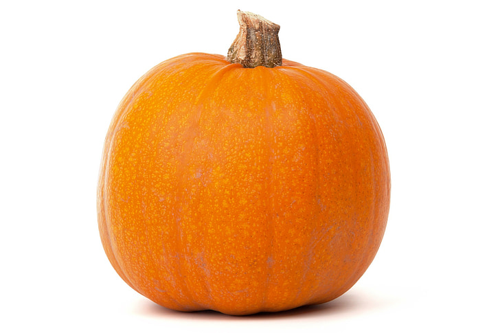

Pumpkin Smoothie

Description
Honestly, I haven't actually tested this recipe, but all of
the recipes I could find online (in about five minutes of searching...) didn't
sound all that great. So based on my smoothie-making experience, I'm makiing
this up a bit as I go. But I imagine this would be pretty great in late
September when fall feels imminent but the days can still be warm.
Ingredients
- 1 cup frozen pumpkin puree (canned is
fine)
- 0.5 frozen banana
- 0.5 cups 2% plain Greek yogurt (or
yogurt of choice)
- 0.5 cups 2% lactose-free milk (or milk
substitute of choice
- 1 tsp pumpkin spice blend
- 1 tsp crushed ginger (I use the
pre-portioned cubes from Trader Joe's freezer section)
- 1 tsp cinnamon
Directions
- Combine ingredients in blender cup.
- Blend on Extract setting. If there are
still solid bits, blend a second time.
- If desired, garnish with a dollop of
whipped cream and sprinkle of cinnamon. Enjoy!